主题：Molecular Dynamics Simulation —— Research Examples & Parallelization Techniques (MPI / GPU)
Lecture 20 是 Week 10 "Extended Example: Molecular Dynamics" 的第二节，紧接着 Lecture 19 的串行算法 + 共享内存基础。整节课分两大块：(1) Research Examples —— 把今天的 MD + ML 力场（NequIP / Allegro）和真实科研课题（barocaloric 固态制冷）做一遍 case study，让大家看到课程内容在前沿研究里的样子；(2) Parallelization Techniques —— 在 L19 的 OpenMP pointwise / reduction 之上加两层：先讲 distributed memory（domain decomposition + ghost atoms + MPI 通信模式），再讲 GPU 卸载（CUDA kernel + "GPU-resident" 整步消除 CPU↔GPU 数据搬运）。Slide 1 标题、slide 2 是 "请 pull lecture-examples" 的行政页，跳过；slide 3 / 18 是讲者分的两个大章节标题页，转写成下面的章节横幅；slide 22 / 23 / 34 / 36 / 37 是 "Exercise 1–5" 现场练习占位页，本身没有讲解内容，只在它们之后那条 "结论性 bullet" 里有信息（"水分子开始苏醒 / 有一个 OpenMP 选择更好 / 已经能看到融化 / 1 分钟内能跑出结果 / 冰能融化"），把那些 takeaway 折进相邻章节里讲，slide 本身不展开。
讲者用三张图把研究目标递进展开：
Slide 4 ：分子层面（"水盒子"）。 Lecture 19 已经讲过的标准 MD 场景——上千个 H₂O 在一个盒子里跑动力学。
Slide 5 ：材料层面（纳米颗粒结构）。 把规模拉到上万原子，做整块材料/界面/缺陷模拟，目标从"分子"转到"宏观可观测的物性"。
Slide 6 ：又大又准。 真正的研究痛点：传统经验势（如 Lecture 19 的 Stillinger-Weber）便宜但精度低，DFT 准但 O(N³) 算不动。理想是同时拿到大尺度和量子精度——这正是后面 NequIP / Allegro 这种机器学习力场要解决的事。
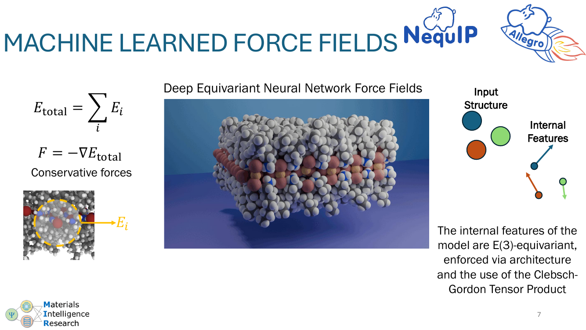
左上的两个公式还是 L19 那一套：总能量 E_total = Σ E_i 是各原子局部能量的和；力 F = −∇E_total 是势能梯度。NequIP 改的是"E_i 怎么算"这一步——不再写解析势函数（如 SW 的 φ₂、φ₃），而是用一个 E(3)-equivariant 神经网络 直接从原子坐标输出 E_i。
"E(3)-equivariant" 是关键技术词：把整个体系平移、旋转、镜像后，预测的能量必须不变、力必须按对应规则变换。这个对称性不是后处理硬加上去，而是通过架构本身（Clebsch-Gordon Tensor Product，slide 10 会出现）和内部特征的几何类型来强制保证的。
右上"Input Structure → Internal Features"：输入只是原子的位置 + 元素类型，内部特征就是几何对象（标量、向量、张量），对称性自动满足。这样训练出来的力场泛化能力显著好于不带等变性的 baseline。
横轴是体系大小（原子数），纵轴是 timesteps/秒——越高越快。讲者每加一个优化就在图上叠一条新曲线，看吞吐怎么涨上去。
Slide 8 ：TorchScript 基线（深绿）。 直接把 PyTorch 模型用 TorchScript 跑——能跑，但每个 timestep 里 Python/JIT 调度、kernel launch 这些固定开销很大。小体系（10–100 原子）尤其惨——本身计算量不大，开销占主导，所以左侧曲线很低。
Slide 9 ：AOTI 加上来（中绿）。 用 PyTorch 新的 export + AOT-Inductor：
整条曲线被抬上去，特别是小体系（消的开销正是它的瓶颈）。
Slide 10 ：暴露 Clebsch-Gordon Tensor Product 这个瓶颈。 左上那张稀疏矩阵图是关键：等变神经网络里把两个张量"耦合"成新张量的运算稀疏（只有特定 (l₁, l₂, l₃) 三元组组合非零）。如果直接用通用 dense 矩阵乘，绝大部分计算是浪费——这成了 AOTI 之后的新瓶颈。
Slide 11 ：换上自定义 TP kernel（浅绿，6.2× 标注）。 用 NequIP 的 OpenEquivariance、Allegro 的 Custom Triton + NVIDIA cuEquivariance 这些专门写的稀疏 TP kernel 替代通用实现，再涨一档。slide 上那个 "6.2x" 标注是在某个 atom count 处相对最初 TorchScript baseline 的总加速——四步叠加下来的成果。
这一段的工程教训："用 ML 模型当力场"在生产 MD 里的瓶颈，从来不在网络精度，而在 Python 调度、kernel launch 开销、和库里现成 kernel 与你算子结构的不匹配。课程后半部分（slide 35 之后）讲的 GPU 优化思路在这里完全对应。
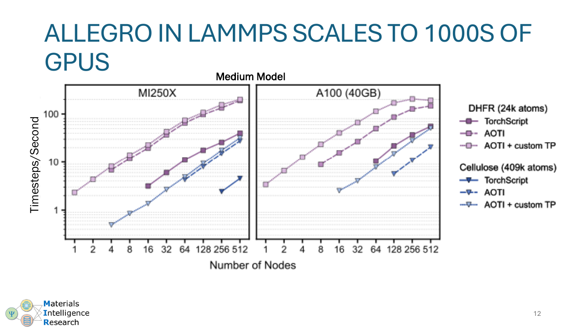
左右两张图分别是两台超算（MI250X 和 A100 40GB），横轴是节点数（最多 512 个），纵轴是 timesteps/秒。每张图里两条曲线对应两个体系大小：DHFR（24k 原子）和 Cellulose（405k 原子）。三种颜色对应 slide 8–11 的优化级别（TorchScript / AOTI / AOTI + custom TP）。
核心信息：曲线在两个数量级的节点数上仍然近似线性上升——说明把 Allegro 嵌进 LAMMPS 后，domain decomposition + ghost atom 通信（这是第二部分 slide 24–32 要讲的内容）能让 ML 力场也吃掉成千 GPU 的算力。这是把"实验室级 ML 模型"推到"超算级生产模拟"的关键证据。
注意大体系（Cellulose 405k）的曲线一直在小体系（DHFR 24k）上方——原子越多越能填满 GPU，每节点利用率高，scaling 效率反而更好。这是 MD strong scaling 的常见现象：太小的体系切到太多节点会被通信吃掉。
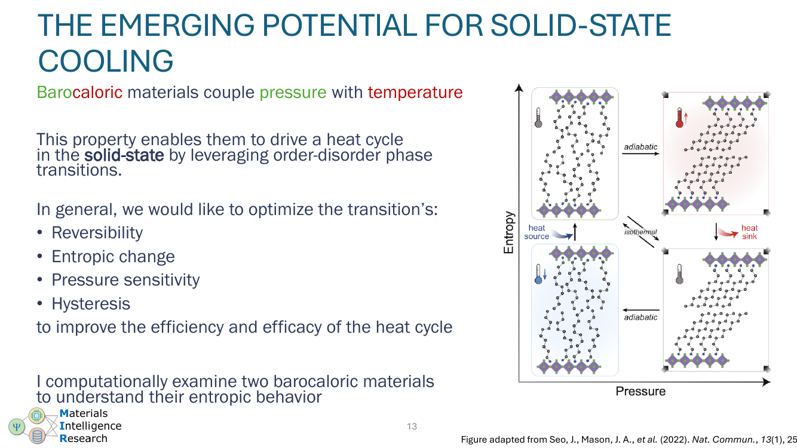
讲者切到自己组里在做的研究：barocaloric 材料——一种"压一下、撤压、就能当冰箱用"的固态相变材料。物理上利用压力 ↔ 温度的耦合：在临界压力下材料发生 order/disorder 相变，相变的潜热可以用来吸放冷热。
右边 P-E 图里的"hysteresis loop"（红色滞回曲线）是关键——越宽越浪费能量；reversibility / entropic change / pressure sensitivity 这几个指标共同决定一个材料能不能做成实用制冷剂。讲者要研究的就是用 MD 模拟去看微观上是什么决定了这些指标。
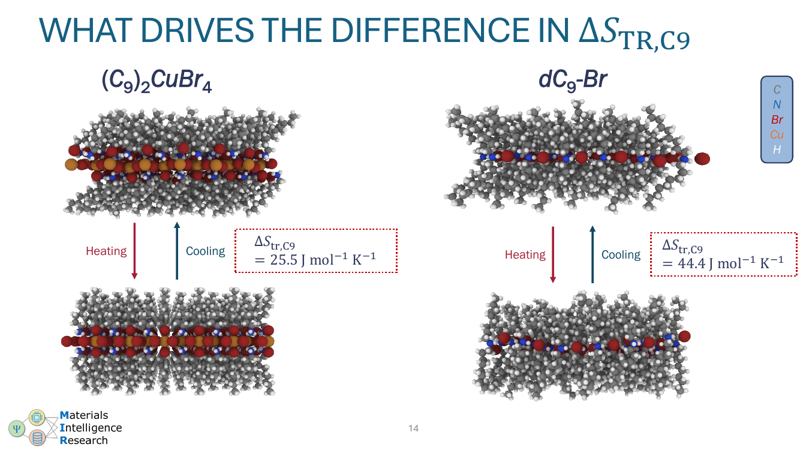
两种成分相近的层状材料：
制冷能力直接正比于 ΔS——所以 dC₉-Br 是更好的制冷剂候选。问题是：从化学式上看几乎一样的两个东西，为什么熵变差这么多？ 这是 MD 要回答的问题（slides 15–17）。
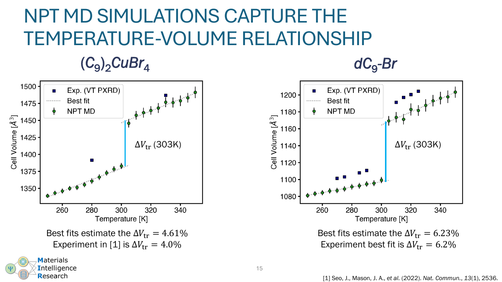
两张图横轴温度、纵轴单胞体积。绿色圆点是 MD 模拟（NPT 系综——粒子数 N、压力 P、温度 T 都恒定，体积 V 自由变化），蓝色方块是实验 PXRD 数据，灰色虚线是分段 best fit。
关键：在相变温度附近（≈303 K）能看到一个体积跳变 ΔV_tr，模拟和实验给出的 ΔV_tr 几乎一致：
这一步的目的是建立 MD 模型的可信度——既然能复现宏观相变行为，就可以放心用它去看实验看不到的原子层面机制。
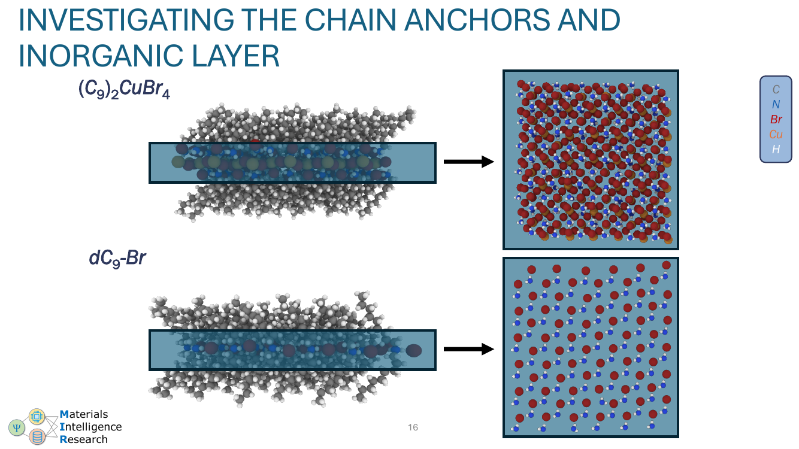
两种材料的结构都是"层状"：长 C₉ 烷基链 + 中间一层无机层（CuBr₄ 或 Br⁻）。讲者把每个材料切出一片无机层切片（右侧的红蓝点阵图），观察相变前后这一层的有序度变化——尤其是 N–H · · · 阴离子 的氢键网络是否还在。
这种"先模拟整体再切片观察"是 MD 比实验强的地方：实验只能看体积、衍射峰这种全局量，模拟可以任意切层、统计任意子集的局部序参量。
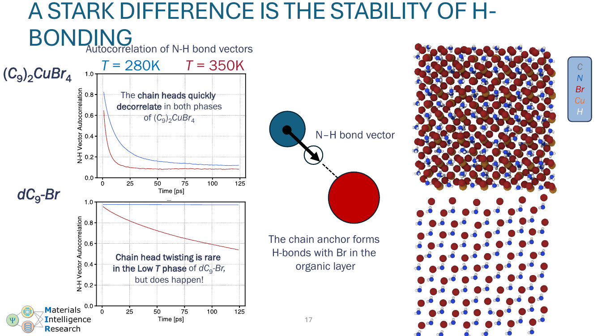
左边两张图是 N–H 键向量自相关函数 vs 时间——曲线下降越快说明 H-键越早 decorrelate（即被破坏）。两组温度（280 K = 相变前 / 350 K = 相变后）。
右上的小卡通图就是这个发现："chain anchor"（链端的 N–H）和无机层的 Br 形成的氢键，是 dC₉-Br 多出来那部分熵变的来源。
整个 case study 走完一遍：实验现象 → MD 验证 → 切层观察 → 找到微观机制。这就是这门课所讲技术（高效力场 + 大规模并行 MD）能产生科学发现的具体场景。
这三张和 Lecture 19 的 slide 31–33 内容完全一致，是讲者在做"快速回顾"作为 Exercise 1（slide 22 — "把 OpenMP 加进 MD 引擎"）的入场背景。
#pragma omp parallel for 直接套，无 race。Exercise 1 之后那行 slide 上写着 "The water molecules are starting to wake up"——意思是加完 OpenMP 之后体系能动起来了，但还远没快到看融化。
原 slide 只有 "Exercise 2" 占位 + 一行结论 "One parallelism choice seems better for our force OpenMP reduction"。讲者在课堂上让大家比较了 slide 21 reduction 的几种实现（atomic / per-thread accumulator / 按 i 分配 owner-computes）的 OpenMP 实测速度，结论是其中一种明显占优。
具体哪种更好，依赖体系大小、邻居数、线程数这些因素，但教学口径上一般是：per-thread accumulator + reduction 在中等线程数下是最稳的——避免 atomic 的 cache line 争抢，又比 owner-computes 少一半 force evaluation（保住 Newton 第三定律对称性）。这条结论会延续到下一节"分布式"——只是把"线程私有累加器"换成"每个 MPI rank 私有累加器 + 跨 rank reduce"。
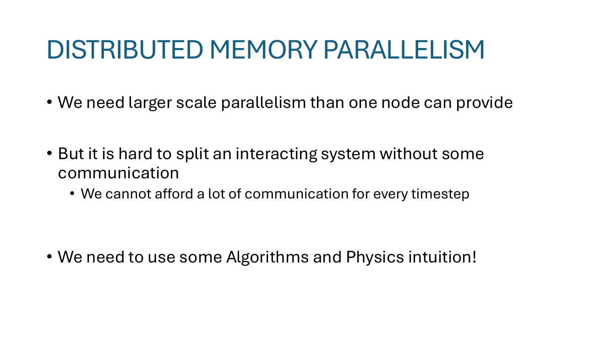
"We need larger scale parallelism than one node can provide" —— OpenMP 只能吃掉单节点那点核（大约 10²–10³ 核），但 ML 力场 + 大体系（slide 12 那种 4×10⁵ 原子）要吃成百上千节点，必须跨节点 → MPI。
"It is hard to split an interacting system without some communication" —— 拆分 MD 体系的根本困难：原子之间互相施力，跨边界的力一定要传消息。这是和"嵌入式并行（embarrassingly parallel）"问题最大的区别。
"We cannot afford a lot of communication for every timestep" —— Δt ≈ fs，每秒钟可能要走 ~10⁶ 步；每步都做全局 communication 的开销会直接吃掉所有节点的算力。
"We need to use some Algorithms and Physics intuition!" —— 讲者抛出转折点：要解决前面这个 dilemma，靠的是 L19 里讲过的locality（cutoff 之外没有相互作用）。下一页就是把 locality 翻译成 MPI 切分策略。
Slide 25 那条黑色竖线就是 domain 切分线：把整个 simulation box 沿 x 方向劈成两半，左半给 MPI Rank 1，右半给 MPI Rank 2。每个 rank 只拥有它那一半里的原子（"local" / "owned"）——只为这些原子算力、做积分、更新位置。
Slide 25/26 上画的两个带阴影的圆圈就是 cutoff 球——力的计算只看这个球内的原子。如果一个原子的 cutoff 球完全落在自己 rank 的区域内（slide 25 左半的圆圈），那它需要的所有邻居都在本地内存，不需要任何通信。
右图（slide 26）右上那段话点出了核心思想："We use the spatial locality of the most computationally expensive calculations to minimize communication." —— 把 L19 讲的 cutoff 物理（slide 23 的"远处 ≈ 0"）从"少算"升级为"少传"。
关键约束（讲者没写但是物理上必备）：每个 rank 的 domain 必须比 cutoff 大——不然一个原子的邻居要跨多个 rank，通信模式就退化了。
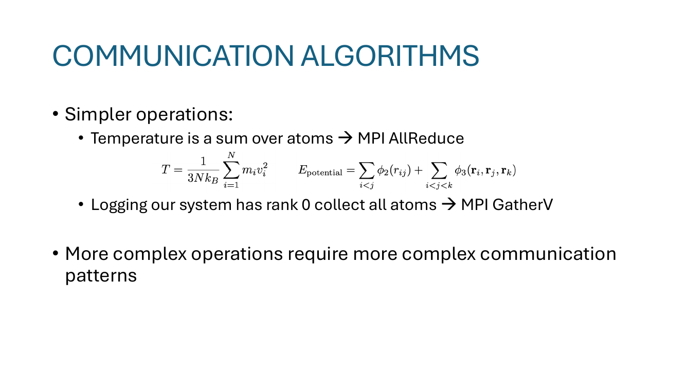
两个公式都是对所有原子的求和：
两边都是可分解的全局规约：
MPI_Allreduce(local_sum, global_sum, MPI_SUM) 一次集合通信，每个 rank 都拿到全局结果。用 AllReduce（不是 Reduce）是因为 thermostat 那种 v_i ← α·v_i 公式里的 α 是用全局 T 算出来的，每个 rank 都要同一个 α 来更新自己的速度——所以全员都得拿到结果。
把整个体系状态（每个原子的 position, velocity）汇总到 rank 0 写文件——经典 MPI_Gatherv：每个 rank 给的数据长度不一样（owned 原子数不一样），用 Gatherv（V = variable）而不是 Gather。这通常每隔 N 步做一次，不是每步——避免成为瓶颈。
"More complex operations require more complex communication patterns" → 引出下一节的 ghost atom + sendrecv。
Slide 28 ：问题暴露。 Rank 1 区域里靠近边界的那个原子，它的 cutoff 球明显穿过了 rank 边界到了 Rank 2 的领地。算这个原子的力时，它需要 Rank 2 那边的原子坐标，但那些原子不在它本地内存里。
Slide 29 ：解决方案 — 复制邻居（"ghost atoms"）。 每个 rank 在每步开始时，从相邻 rank 把它边界附近的原子拷贝一份过来。这些拷贝叫 "ghost atoms"，原版叫 "local" / "owned"。这样每个 rank 在算力时，只读自己内存就能拿到所有需要的邻居。Halo / ghost layer 的厚度只要 ≥ cutoff 半径 r_c 就够。
Slide 30 ：用 ghost 信息算力。 Rank 1 现在可以正常算它边界原子受到的所有 F_l, F_j, F_k, F_m, F_i——包括那些"对方原子作用在自己 owned 原子上的"贡献。注意此时 ghost 那一侧（slide 30 右半淡红色区域）的原子是只读的，rank 1 不更新它们的位置。
Slide 31 ：把"自己施加在 ghost 上的反作用力"送回去。 这一步是 Newton 第三定律的代价：(i, j) 对子产生 F_ij 加到 i，同时 −F_ij 加到 j。如果 i 是本地、j 是 ghost，那 j 上累计的力是 rank 1 算出来的——但 j 真正的 owner 是 rank 2，得把这个增量送回去给 rank 2 累加。
整套循环（每个 timestep 都跑一次）：
(1) exchange ghost positions → (2) compute forces locally → (3) reverse-communicate ghost forces → (4) integrate own atoms。
这是 LAMMPS、Gromacs、NAMD 这种主流 MD 引擎的实质并行骨架。Slide 12 那条 "Allegro scales to 1000s of GPUs" 的 strong scaling 曲线，就是建立在这套机制之上。
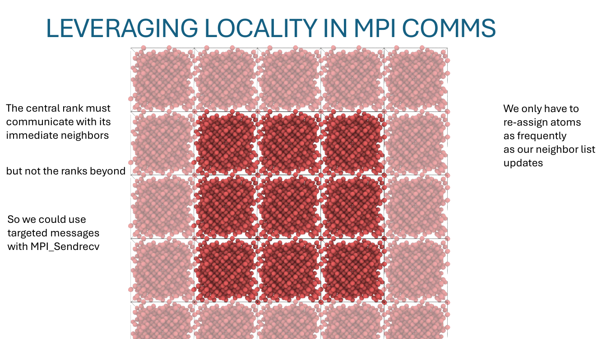
Slide 27 那种 AllReduce 是所有 rank 都参与的集合通信——成本 O(log P) 在好的网络上，O(P) 在差的网络上。但在 ghost 交换里，每个 rank 只需要和它空间上相邻的 rank 通信（3D 切分时是 26 个面/边/角邻居，2D 时是 8 个，1D 时只有 2 个）。
这一页的 3×3 网格图就是在画这件事：中间那块红色 cell 只跟正东/西/南/北/对角的 cell 互发消息，不跟更远的 ranks 通信。
这种"邻居对邻居"的通信用 MPI_Sendrecv（同时发送给一个 peer、接收来自另一个 peer）或 nonblocking MPI_Isend + MPI_Irecv 实现。优势：
L19 slide 25 已经讲过 neighbor list 不是每步都重建——那么 ghost 也不用每步都换。原子漂移很慢（5 fs 一步走 ~0.05 Å），哪些 ghost 要传、哪些 owned 原子要换 rank 这些昂贵决策只在 neighbor list 重建那几步做一次（典型 50–100 步一次）。中间的所有步骤复用上次决定的 ghost 列表，只更新它们的坐标——这是另一处用 locality + 时间相关性把通信成本摊掉的地方。
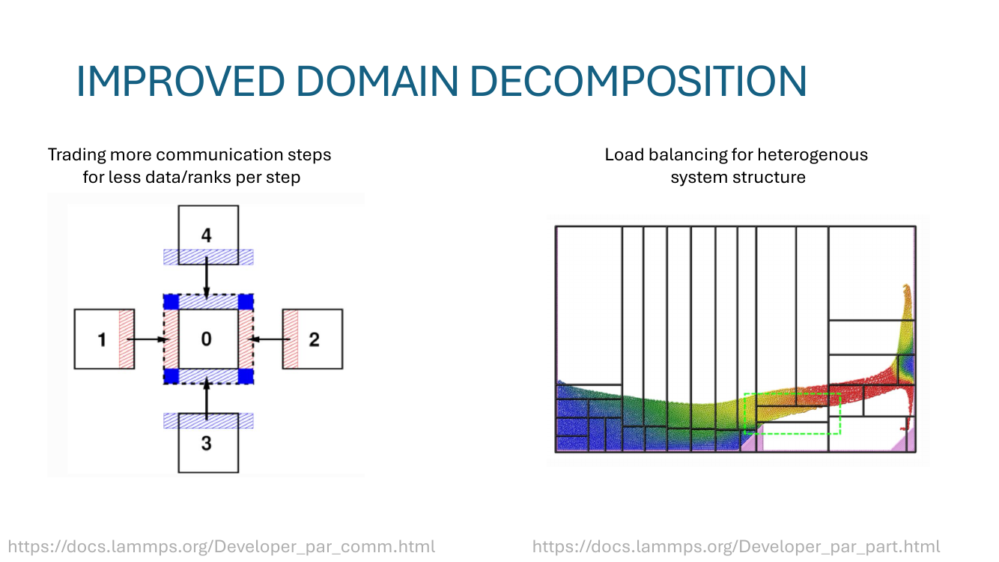
"Trading more communication steps for less data/ranks per step"。中间那块 rank 0 不是直接跟 4 个邻居一次性大交换，而是先 ↑↓（蓝色箭头）同步上下邻居、再 ←→（黄色箭头）同步左右邻居。这样每一步 rank 0 只跟一个 rank 通信，但需要两步。整体延迟 t = 2·(latency + small_msg_size/bandwidth)；如果一次大交换 4 个邻居，t = latency + 4·msg_size/bandwidth。当 latency 主导时（小消息），分多步更划算。
不是所有体系都均匀分布——比如一团液滴在真空里，原子集中在中央，外围几乎没有。等大切分会让边缘 rank 几乎没活干、中央 rank 累死。LAMMPS 的解决方案：把 grid 在不同方向非均匀切（图里那些不等宽的列就是按密度调整过的边界），让每个 rank 拿到的原子数而不是体积大致相等。
底部两个 LAMMPS 文档链接是讲者给"想再深入"的同学留的指针——课程不展开，但提示这是真实代码里要处理的问题。
这一页内容是 "Exercise 3" 占位 + 结论行 "This is not so bad, we can begin to see some melting!"。意思：把 OpenMP（slide 22）+ MPI（slides 24–33）都加进来之后，单次模拟能在合理时间内推进到开始观察到融化的步数。但还不够快——下一段（slide 35 起）要把 GPU 也用上。
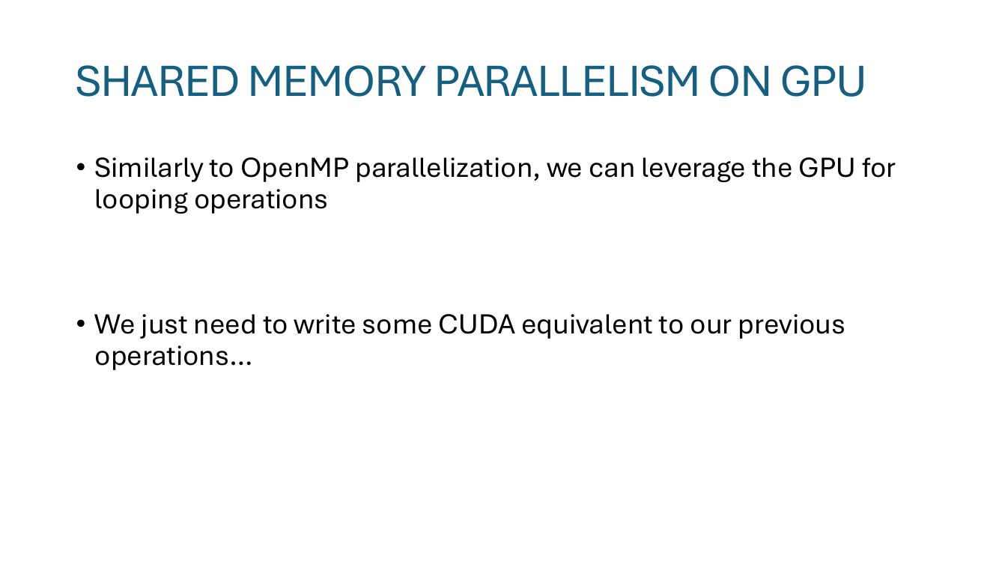
核心结构没变——还是 pointwise update 和 reduction 两类 loop。区别在执行单元：从"几十个 OpenMP 线程"换成"几千个 CUDA thread + grid/block"。
i = blockIdx.x * blockDim.x + threadIdx.x，pos[i] / vel[i] 完全独立读写——天然适合 GPU 的 SIMT 模型。"We just need to write some CUDA equivalent to our previous operations" —— 讲者在这里有意把它说得很轻松，因为概念上确实和 OpenMP 同构；但工程上要处理 memory coalescing、shared memory tile size、warp divergence 等一堆 GPU 特有的细节，这是 slide 11 NequIP 那 6.2× 加速里"custom TP kernel" 真正的工作内容。
"Exercise 4" 占位 + "Now, we can really get somewhere, even in 1 minute!"。把 GPU kernel 加上之后，速度跨过了"实用"门槛——一分钟的 wall time 就能跑出有意义的步数。下一页揭穿这个"1 分钟"背后还藏着的瓶颈。
"Putting it all together" + Exercise 5 + "The ice can be melted!"。OpenMP + MPI + CUDA 全部接好之后，本周的目标（slide 4 那个红色 ice cube）真的能融化成液体水——一整周的算法 + 工程铺垫终于回收。
Slide 38 上画的是"教学版" GPU 用法：每个 timestep 里，系统数据存在 CPU，CPU → GPU 拷贝坐标 → GPU 跑 kernel → GPU → CPU 拷贝力 → CPU 做积分，下一步再来一遍。两个红色 🚫 标志在 PCIe 数据通路上——这是核心瓶颈：
Slide 39 把整张图的左侧 "CPU" 一行整个删掉——所有数据从程序启动后就常驻 GPU memory，timestep 之间也不回到 CPU。Position update、velocity update、force calc、thermostat 全部在 GPU kernel 里完成。CPU 只负责：
这是 LAMMPS-Kokkos、NAMD 3、HOOMD-Blue、Allegro+LAMMPS 这类现代 GPU MD 引擎的标准设计。是把 slide 12 那条 "Allegro 1000 GPU strong scaling" 的曲线推上去的最后一个工程点。
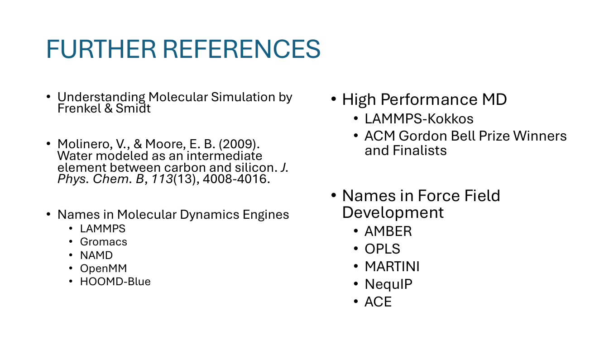
MPI_Allreduce；ghost 交换用 MPI_Sendrecv（点对点，邻居拓扑）；logging 用 MPI_Gatherv（变长汇总到 rank 0）。